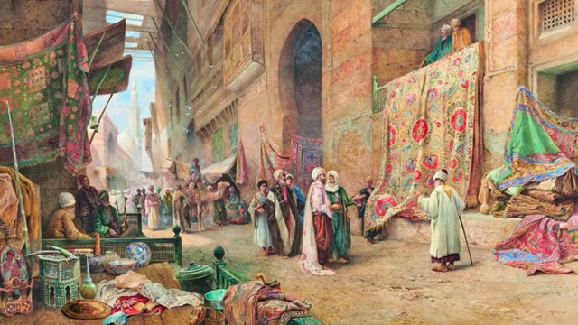
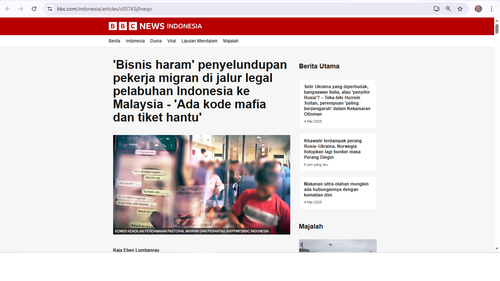

Pemasaran Islam: Strategi Bisnis Berkah dan Beretika
Disusun oleh : Navrida Rully Anastasya
Bekasi, 23 Maret 2025

PENGERTIAN PEMASARAN ISLAMI
Pemasaran Islami adalah konsep pemasaran yang berlandaskan nilai-nilai Islam, di mana seluruh proses pemasaran dilakukan sesuai dengan prinsip-prinsip syariah. Pemasaran ini tidak hanya berfokus pada keuntungan duniawi, tetapi juga memperhatikan etika, moral, dan tanggung jawab sosial sesuai dengan ajaran Islam.
Pemasaran Islami mencakup kegiatan mengenali, memahami, dan memenuhi kebutuhan serta keinginan konsumen dengan cara yang halal, adil, dan penuh keberkahan. Tujuan akhirnya bukan hanya mendapatkan keuntungan materi, tetapi juga mencapai keberkahan dan ridha Allah SWT.
KONSEP DAN KARAKTERISTIK PEMASARAN ISLAMI
Pemasaran Islami ini ialah pendekatan pemasaran yang berlandaskan nilai-nilai Islam, seperti kejujuran, keadilan, dan keberkahan. Karakteristiknya meliputi
1. Kehalalan produk
Produk yang dipasarkan harus halal dan tidak mengandung unsur haram.
2. Kejujuran dan transparansi
Tidak boleh ada penipuan atau manipulasi dalam pemasaran.
3. Keadilan
Harga dan keuntungan harus wajar serta tidak merugikan pihak lain.
4. Keberkahan
Produk dan layanan harus memberi manfaat bagi masyarakat.
PRINSIP PEMASARAN ISLAMI
Prinsip utama dalam pemasaran Islami mengacu pada ajaran Al-Qur'an dan hadis, antara lain:
1. Tauhid (keimanan kepada Allah)
Pemasaran dilakukan dengan niat ibadah dan menjaga kepercayaan kepada Allah.
2. Amanah (kepercayaan dan tanggung jawab)
Menjalankan bisnis dengan penuh tanggung jawab dan menjaga kepercayaan pelanggan.
3. Keadilan (tidak zalim)
Menghindari eksploitasi dan menyeimbangkan hak antara penjual dan pembeli.
4. Maslahah (kemanfaatan bagi banyak orang)
Pemasaran harus dilakukan dengan niat mencari keberkahan, bukan sekadar keuntungan duniawi.
5. Ridha (kerelaan antara pihak yang bertransaksi)
Tidak boleh ada unsur paksaan atau penipuan.
ETIKA ATAU AKHLAK DALAM PEMASARAN ISLAMI
Dalam Islam, pemasaran harus dilakukan dengan etika yang baik, di antaranya:
1. Tidak menipu atau berbohong
Informasi produk harus jujur dan tidak menyesatkan.
2. Menghindari riba dan gharar (ketidakpastian)
Transaksi harus jelas dan tidak mengandung unsur yang merugikan salah satu pihak
3. Tidak melakukan eksploitasi atau monopoli
Harus menghindari tindakan yang merugikan pasar dan konsumen.
4. Menggunakan strategi promosi yang baik
Tidak boleh menggunakan cara-cara yang merendahkan atau menipu konsumen.
STARATEGI DALAM PEMASARAN ISLAMI
Strategi pemasaran Islami mencakup pendekatan yang sesuai dengan nilai-nilai Islam, seperti:
1. Segmentasi pasar berbasis nilai Islam
Menargetkan konsumen yang peduli dengan produk halal dan berkah.
2. Promosi yang etis dan edukatif
Menggunakan media promosi yang tidak menyesatkan, tetapi justru memberi edukasi kepada konsumen.
3. Pelayanan yang baik (ihsan)
Harga dan keuntungan harus wajar serta tidak merugikan pihak lain. Menjaga kepuasan pelanggan dengan memberikan pelayanan yang ramah dan adil.
4. Menjalin hubungan baik dengan pelanggan
Mengedepankan ukhuwah Islamiyah (persaudaraan dalam Islam) dalam berbisnis.
Pemasaran Islami bukan sekadar menjual produk, tetapi juga mengedepankan nilai-nilai moral dan keberkahan dalam setiap transaksi. Pemasaran Islami bukan hanya sekadar menjual produk, tetapi juga memastikan seluruh proses bisnis dilakukan dengan cara yang halal, jujur, dan adil sesuai dengan ajaran Islam. Dengan menerapkan prinsip-prinsip syariah, bisnis tidak hanya mendapatkan keuntungan finansial tetapi juga keberkahan dalam jangka panjang.
Pemasaran Islami bisa menjadi strategi bisnis yang lebih berkelanjutan karena mengutamakan kepercayaan, keadilan, dan kesejahteraan umat. Oleh karena itu, bisnis yang menerapkan konsep ini cenderung mendapatkan loyalitas pelanggan yang lebih kuat serta dampak positif bagi masyarakat luas.
Hati-hati dengan Maysir: Saat Bisnis
Tergelincir Jadi Judi
Disusun oleh : Navrida Rully Anastasya
Bekasi, 04 Mei 2025
Dalam labirin aktivitas ekonomi yang kian kompleks, garis demarkasi antara praktik bisnis yang beretika dan jebakan spekulasi yang merugikan seringkali tersembunyi di balik gemerlap janji keuntungan instan. Konsep maysir, sebuah istilah yang merujuk pada perjudian atau transaksi yang didominasi oleh unsur untung-untungan dan ketidakpastian yang ekstrem, menjadi rambu peringatan krusial dalam lanskap etika bisnis. Tanpa kehati-hatian dan pemahaman yang mendalam, model bisnis yang awalnya tampak inovatif dan menggiurkan dapat dengan mudah terperosok menjadi praktik maysir yang tidak hanya menggerogoti fondasi finansial, tetapi juga mengikis nilai-nilai moral dan spiritual.
MENELISIK LEBIH DALAM ESENSI MAYSIR
Akar kata maysir dalam khazanah bahasa Arab mengandung makna kemudahan dan kekayaan yang diperoleh tanpa usaha keras, layaknya mendapatkan hadiah tanpa jerih payah. Namun, esensinya lebih dari sekadar keuntungan instan. Maysir mencakup setiap transaksi di mana kepastian hasil sangat rendah, dan keuntungan satu pihak secara inheren terkait dengan kerugian pihak lain melalui mekanisme pertaruhan. Unsur ketidakjelasan (gharar) yang signifikan menjadi karakteristik utama maysir, menciptakan situasi di mana informasi asimetris dan potensi manipulasi sangat tinggi. Dalam era digital ini, manifestasi maysir semakin beragam, menyusup ke dalam berbagai platform investasi dan model bisnis online yang tampak modern.
JEJAK MAYSIR DALAM DUNIA BISNIS KONTEMPORER
Bentuk-bentuk praktik bisnis yang berpotensi mengandung jebakan maysir terus berevolusi seiring dengan perkembangan teknologi dan inovasi finansial:
1. Skema Piramida dan Investasi Bodong Berbasis Ponzi
Model bisnis yang menjanjikan keuntungan luar biasa tinggi dalam waktu singkat, namun sumber keuntungannya tidak jelas dan berkelanjutan. Pembayaran kepada investor awal sepenuhnya bergantung pada masuknya investor baru, menciptakan ilusi keuntungan yang akan runtuh ketika aliran dana baru terhenti. Kasus-kasus seperti ini, sayangnya, seringkali memakan banyak korban dengan kerugian finansial yang besar.
2. Perdagangan Derivatif dan Forex dengan Leverage Ekstrem
Meskipun merupakan instrumen keuangan yang sah, perdagangan valuta asing dan produk derivatif dengan leverage (daya ungkit) yang sangat tinggi dapat berubah menjadi arena maysir bagi para trader ritel yang kurang berpengalaman. Keputusan trading yang didasarkan pada emosi dan spekulasi murni, tanpa analisis fundamental dan teknikal yang solid, lebih menyerupai perjudian daripada investasi yang terukur.
3. Model Bisnis Game Online dengan Unsur Taruhan Tersembunyi
Beberapa game online populer menawarkan fitur di mana pemain dapat membeli item virtual atau mata uang dalam game dengan uang sungguhan, yang kemudian dapat dipertaruhkan dalam interaksi antar pemain atau bahkan ditukar kembali menjadi uang melalui pihak ketiga. Batasan antara hiburan dan perjudian menjadi kabur dalam model bisnis semacam ini.
4. Promosi Penjualan dengan Undian Berhadiah Besar yang Tidak Transparan
Jika sebuah bisnis terlalu gencar mempromosikan undian atau giveaway dengan hadiah fantastis sebagai daya tarik utama, sementara nilai produk atau layanan yang ditawarkan menjadi sekunder, ini dapat mengarah pada praktik maysir. Kurangnya transparansi dalam mekanisme undian dan potensi manipulasi menjadi perhatian serius.
5. Penawaran "Peluang Investasi" dengan Janji Keuntungan Pasti Tanpa Risiko
Setiap investasi yang sah pasti mengandung risiko. Penawaran investasi yang menjanjikan keuntungan tetap tanpa risiko sama sekali patut dicurigai dan seringkali berujung pada praktik penipuan yang mengandung unsur maysir.
KONSEKUENSI DESTRUKTIF MAYSIR BAGI EKOSISTEM BISNIS
Implikasi negatif maysir dalam dunia bisnis jauh melampaui sekadar kerugian finansial individu:
a. Distorsi Pasar dan Alokasi Sumber Daya yang Tidak Efisien
Praktik spekulatif mengalihkan modal dari investasi produktif yang menciptakan nilai riil ke dalam aktivitas yang hanya menghasilkan keuntungan berdasarkan keberuntungan semata.
b. Ketidakstabilan Sistem Keuangan
Aktivitas maysir yang meluas dapat menciptakan gelembung aset yang tidak berkelanjutan dan meningkatkan risiko krisis keuangan sistemik.
c. Eksploitasi dan Ketidakadilan Sosial
Skema maysir sering kali mengeksploitasi mereka yang kurang berpengetahuan dan mudah tergiur dengan janji keuntungan cepat, memperlebar jurang ketidaksetaraan ekonomi.
d. Kerusakan Moral dan Etika Bisnis
Mendorong mentalitas serakah, tidak bertanggung jawab, dan mengabaikan prinsip-prinsip kerja keras dan kejujuran dalam berusaha.
e. Regulasi yang Lebih Ketat dan Hilangnya Kepercayaan Publik
Maraknya praktik maysir dapat memaksa pemerintah untuk memberlakukan regulasi yang lebih ketat, yang pada akhirnya dapat menghambat inovasi dan pertumbuhan bisnis yang sehat. Hilangnya kepercayaan publik terhadap dunia usaha juga menjadi kerugian yang sulit dipulihkan.
MENEGUHKAN KOMITMEN PADA BISNIS YANG BERKAH DAN BERETIKA
Menghindari jebakan maysir dan membangun bisnis yang berintegritas memerlukan komitmen yang kuat pada prinsip-prinsip etika:
1. Mengedepankan Transparansi Informasi
Menyajikan informasi yang akurat, jujur, dan lengkap mengenai produk, layanan, dan risiko yang terkait.
2. Membangun Model Bisnis yang Berkelanjutan
Fokus pada penciptaan nilai riil melalui inovasi, efisiensi, dan pemenuhan kebutuhan konsumen.
3. Melakukan Analisis Risiko yang Mendalam
Memahami dan mengelola risiko secara bertanggung jawab, serta menghindari spekulasi yang tidak terukur.
4. Mengutamakan Keadilan dalam Setiap Transaksi
Memastikan bahwa setiap pihak yang terlibat dalam transaksi mendapatkan manfaat yang adil sesuai dengan kontribusi mereka.
5. Menjunjung Tinggi Tanggung Jawab Sosial
Mempertimbangkan dampak bisnis terhadap masyarakat dan lingkungan sekitar.
Godaan keuntungan instan dan kekayaan tanpa usaha seringkali menjadi daya tarik utama maysir. Namun, sebagai pelaku bisnis yang bertanggung jawab, kita harus memiliki visi jangka panjang yang melampaui keuntungan sesaat. Bisnis yang dibangun di atas fondasi etika yang kuat, transparansi, dan nilai riil akan lebih устойчивый (berkelanjutan) dan memberikan manfaat yang lebih luas bagi masyarakat. Mari kita berhati-hati agar bisnis yang kita jalankan tidak tergelincir menjadi arena perjudian yang merugikan, namun tetap menjadi sumber keberkahan dan kemajuan bersama. Ingatlah, keberhasilan sejati diraih melalui kerja keras, inovasi, dan integritas, bukan melalui untung-untungan dan spekulasi semata.
Kasus-kasus investasi bodong dengan skema Ponzi sering terjadi di berbagai negara dan menjadi contoh klasik praktik maysir dalam bisnis modern. Informasi mengenai kasus ini dapat ditemukan dalam berbagai berita dan laporan investigasi.
Berikut adalah contoh studi kasus dengan model bisnis yang tersebar di internet yang tidak sesuai dengan akhlak atau perilaku jual beli yang baik :

Menurut opini pribadi saya terkait studi kasus diatas ialah :
Berita tentang penyelundupan pekerja migran Indonesia ke Malaysia melalui jalur resmi pelabuhan, seperti yang diungkap oleh BBC News Indonesia, sungguh menggugah nurani dan menimbulkan keprihatinan mendalam. Praktik ini tidak hanya mencerminkan lemahnya pengawasan di perbatasan, tetapi juga menunjukkan betapa sistematis dan terorganisirnya jaringan perdagangan manusia yang melibatkan oknum-oknum yang seharusnya menjadi penjaga hukum dan keamanan.
Melihat bagaimana calon pekerja migran diperlakukan—dikenakan biaya tinggi, dipaksa melalui jalur ilegal dengan dalih resmi, dan bahkan menghadapi situasi mencekam di kapal—menunjukkan betapa rentannya posisi mereka. Mereka bukan hanya menjadi korban eksploitasi ekonomi, tetapi juga korban dari sistem yang gagal melindungi hak-hak dasar warganya.
Yang lebih menyedihkan adalah dugaan keterlibatan oknum petugas imigrasi dan polisi dalam praktik ini. Ketika aparat yang seharusnya melindungi justru menjadi bagian dari masalah, kepercayaan publik terhadap institusi negara pun tergerus. Hal ini menuntut tindakan tegas dan transparan dari pemerintah untuk membersihkan institusi dari oknum-oknum yang mencoreng nama baiknya.
Pemerintah perlu mengambil langkah konkret untuk memperkuat sistem pengawasan di perbatasan, memberikan edukasi kepada calon pekerja migran tentang prosedur resmi, dan memastikan bahwa jalur legal benar-benar aman dan dapat diakses oleh semua. Selain itu, kerja sama dengan negara tujuan seperti Malaysia harus ditingkatkan untuk memastikan perlindungan bagi pekerja migran dan penindakan terhadap jaringan perdagangan manusia.
Sebagai masyarakat, kita juga memiliki peran dalam menyuarakan ketidakadilan ini dan mendukung upaya-upaya yang bertujuan untuk melindungi hak-hak pekerja migran. Mereka adalah pahlawan devisa yang layak mendapatkan perlindungan dan penghormatan, bukan menjadi korban dari sistem yang korup dan tidak adil.
Semoga dengan perhatian dan tindakan bersama, kita dapat menghentikan praktik keji ini dan membangun sistem yang lebih manusiawi dan adil bagi semua warga negara.